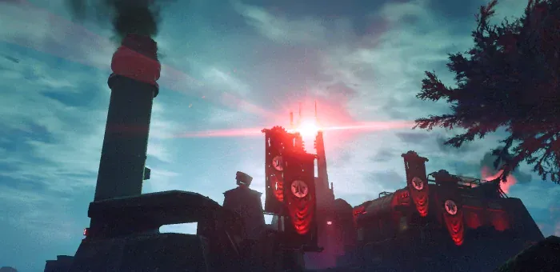

Communications Array
 Communications Array
Communications Array
This 条款 is a stub.
You can help by expanding it.
the Communications Array 是一个  机器人 galactic 位置.
机器人 galactic 位置.
背景故事
On 2月 8th, 2186, the 生化人 launched a cyber-攻击, 索敌 超级地球 citizens and the 绝地潜兵 in an attempt to 晃动 them from attacking Cyberstan 从 Communications Array on Meissa.
On May 13th, 2186, 超级地球 managed to locate the 设施 from which this message was 广播. This prompted them to send the 绝地潜兵 to 占领 the 设施.
Appearances
- May 13th, 2186 - An 机器人 Communications Array is discovered on Meissa.